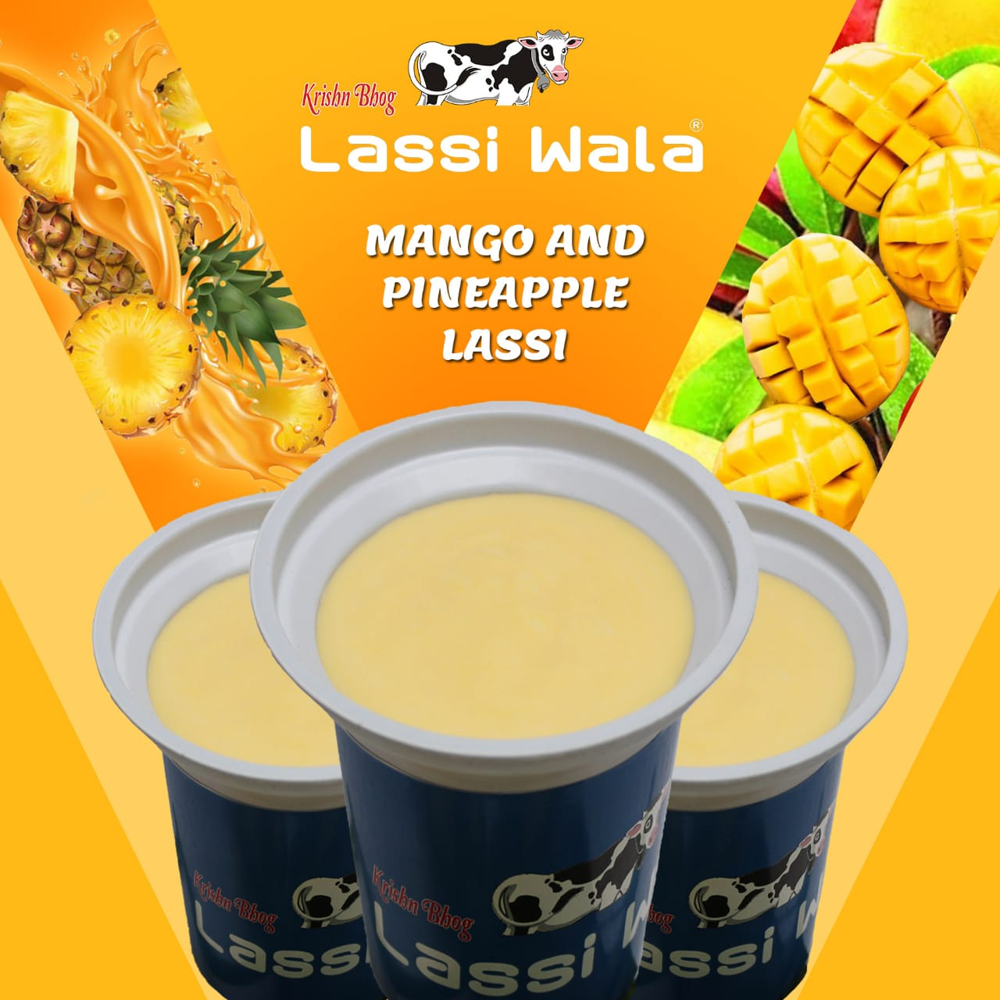

Krishnbhog Lassiwala
Mango & Pineapple Lassi

Description :
Mango & Pineapple Lassi is our all time favorite Indian drink. What better way than to combine the sweetness of mangoes or pineapple with the tanginess of yogurt. Make this fruity, thick, creamy, refreshing Mango & Pineapple Lassi recipe with ripe mangoes or pineapple, yogurt and your choice of flavorings – cardamom, saffron or dryfruit.
Ingridients :
- Curd
- Sugar
- Fresh Mango
- Fresh Pineaplle
- Cream
- Dryfruit
Steps :
- Thicken the curd by removing water from it with the help of a cloth sieve
- Add Sugar and Cream into the curd to make a sweet yougurt.
- Let it get settle and mixed up for a blending taste.
- Rinse, peel and chop the mangoes or pineapple.
- Blend the cutfruit and add it to the yougurt.
- Pour it into a glass and make a homogeneous thick layer of cream on it.
- Freeze it and let it settle for some time.
- Garnish it with dryfruit pieces at the time of serving.
- Enjoy the lassi and feel the richness.